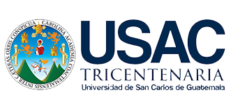
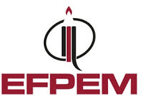

Misión
Formar profesionales de la educación media con preparación científica, pedagógica y humanística, comprometidos con el desarrollo educativo y social de Guatemala.


El 7 de febrero de 1967 se firmó el convenio de cooperación entre el Ministerio de Educación y la Universidad de San Carlos de Guatemala, por medio del cual se buscó coordinar esfuerzos para promover el mejoramiento y desarrollo de la educación nacional, especialmente en el nivel medio.
En diciembre de 1967 se publicó el proyecto de creación de la Escuela de Formación de Profesores de Enseñanza Media, como la institución rectora de la formación de maestros de educación media a nivel nacional.
El 12 de noviembre de 1968, por acuerdo No. 6733 de la Rectoría de la Universidad de San Carlos de Guatemala, se creó la Escuela de Formación de Profesores de Enseñanza Media EFPEM como una entidad académica ejecutora dependiente de la Facultad de Humanidades.
Antes de 1968, Guatemala no contaba con una institución especializada para formar profesores de enseñanza media, por lo que surgió entonces la EFPEM como respuesta a la necesidad de profesionalizar y fortalecer la educación del país.
Formar profesionales de la educación media con preparación científica, pedagógica y humanística, comprometidos con el desarrollo educativo y social de Guatemala.
Ser una institución líder en la formación docente universitaria, reconocida por su calidad académica, innovación y compromiso con la transformación de la educación nacional.